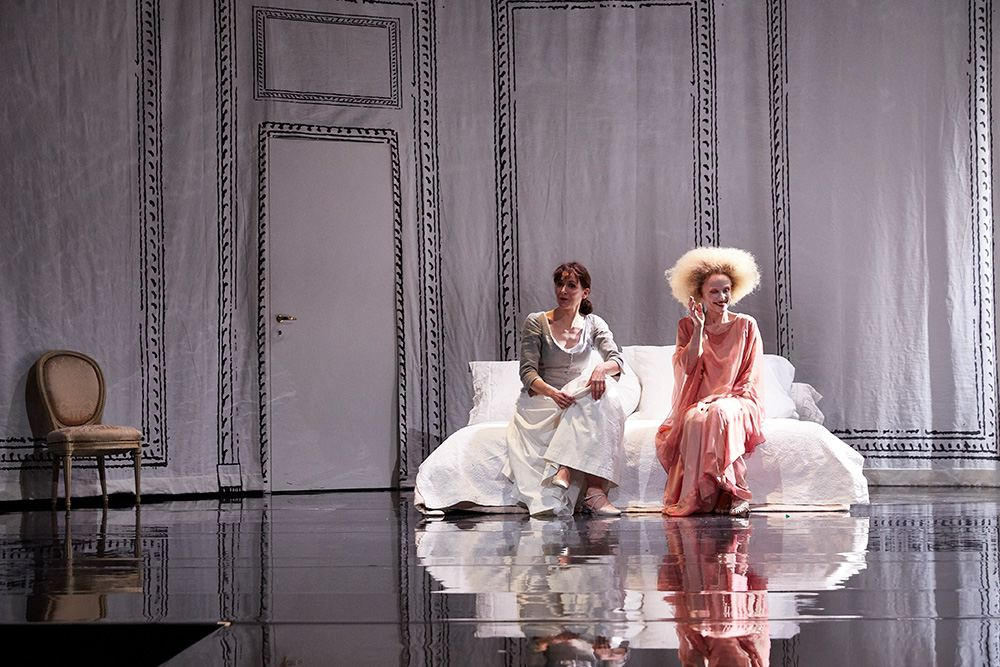
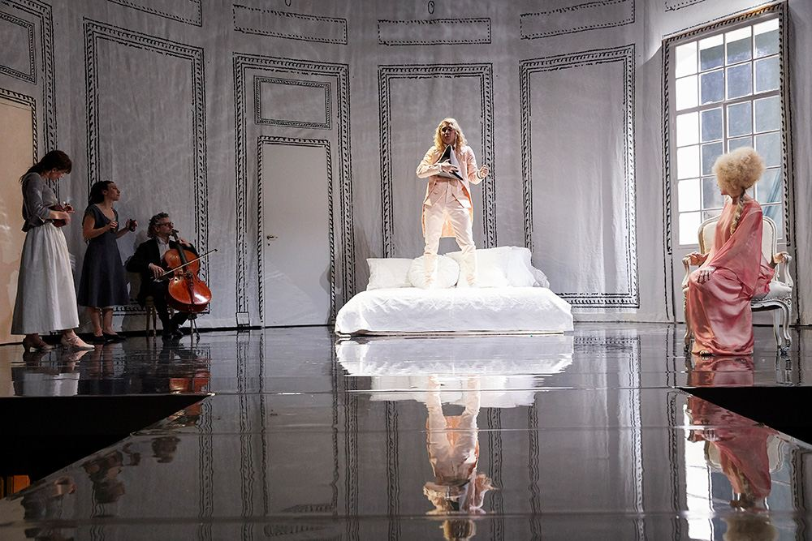
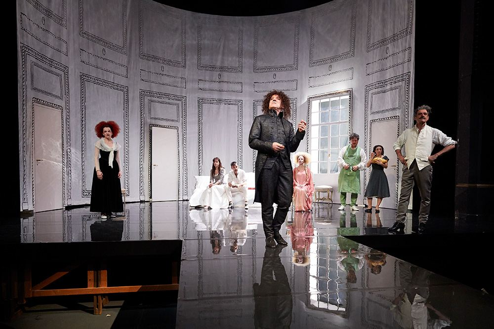
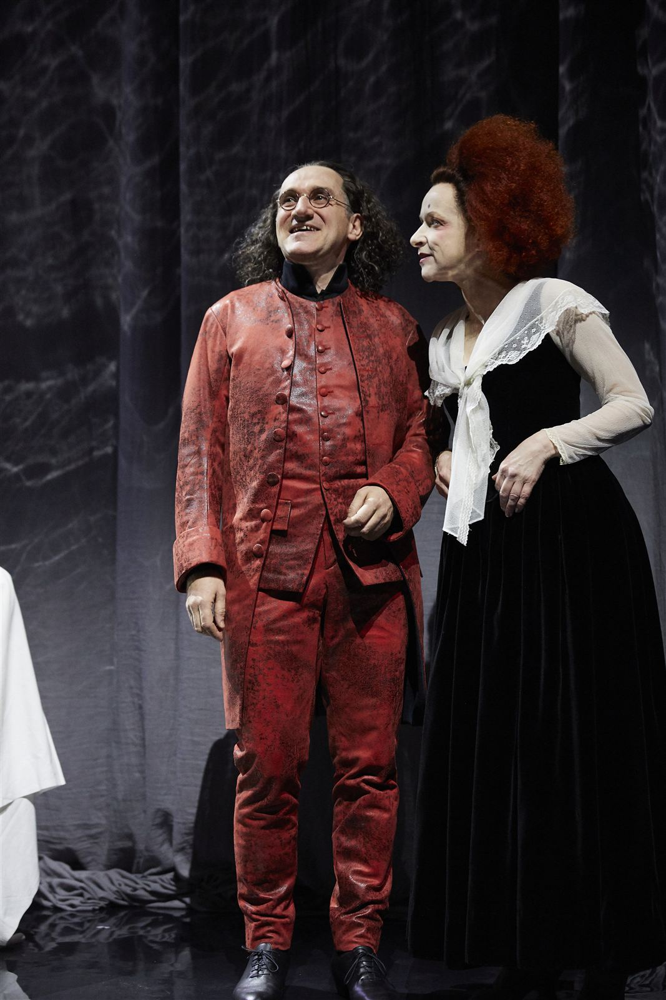
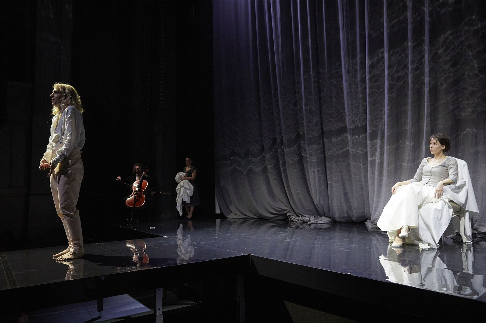
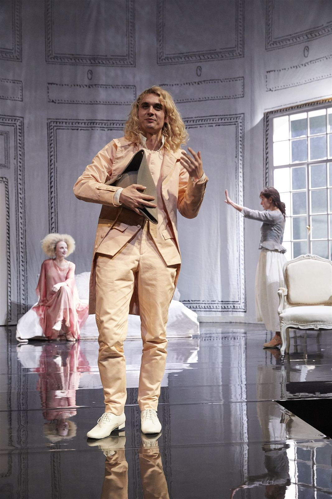
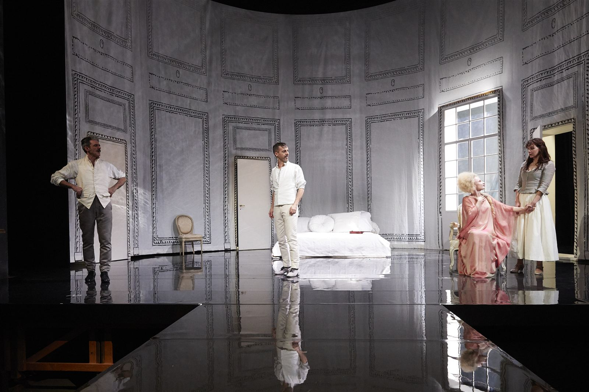

Per la Comédie de Genève, Cristian Taraborrelli firma la scenografia de Le Mariage de Figaro di Beaumarchais, con la regia di Joan Mompart. Un allestimento che rallenta il ritmo frenetico della commedia più celebre del repertorio francese, trasformandola in un adagio filosofico sull’anima umana. Una passerella si protende nel pubblico della Comédie, abbattendo la quarta parete e trascinando gli spettatori nell’intrigo di Figaro.
For the Comédie de Genève, Cristian Taraborrelli designed the sets for Beaumarchais’ Le Mariage de Figaro, directed by Joan Mompart. A staging that slows the frenetic rhythm of the most celebrated comedy in the French repertoire, transforming it into a philosophical adagio on the human soul. A catwalk extends into the audience at the Comédie, breaking the fourth wall and drawing spectators into Figaro’s intrigue.
Pour la Comédie de Genève, Cristian Taraborrelli signe la scénographie du Mariage de Figaro de Beaumarchais, mis en scène par Joan Mompart. Une mise en scène qui ralentit le rythme frénétique de la comédie la plus célèbre du répertoire français, la transformant en un adagio philosophique sur l’âme humaine. Une passerelle s’avance dans le public de la Comédie, brisant le quatrième mur et entraînant les spectateurs dans l’intrigue de Figaro.
Rassegna Stampa
“Visuellement somptueux, porté par des comédiens supérieurs.”
Tribune de Genève, 2018
Leggi l'articolo ↗Galleria








Team Creativo
Tags